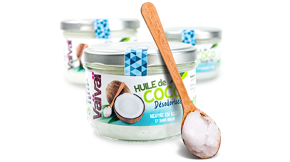

Huile de coco
Huile de coco vierge et biologique
Une huile de coco vierge, pressée à froid, biologique, 100% végétale, idéale pour la cuisson de vos aliments ou en remplacement du beurre.

Eau de coco
Eau de coco Sélection fraîcheur
L'eau de coco Vaïvaï Sélection Fraîcheur est 100% pur jus, sans aucun ajout et possède un goût naturellement plus prononcé de coco.
.

Pétales de Coco
Pétales de coco « recette originale »
Des pétales de chair de coco, simplement toastés au four, sans aucun ajout de matière grasse, pour un plaisir terriblement croustillant.